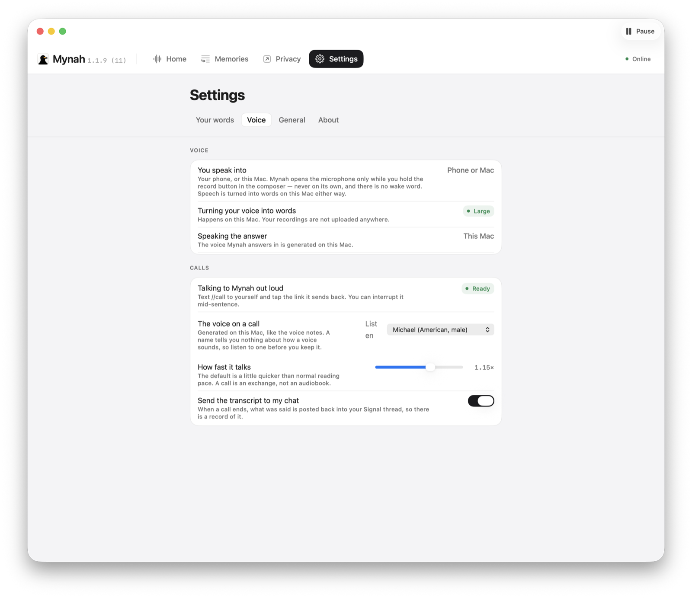
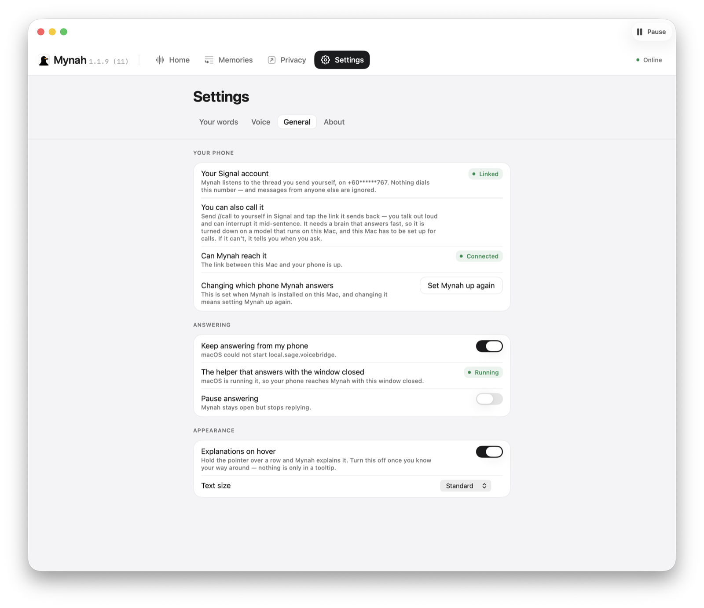

The thinking
A model running on your Mac. Mynah downloads it and starts it for you — you do not open a terminal. It is a few gigabytes, once, and then it is yours.
Talk to it at your desk, or from your phone on Signal. It remembers what you tell it. It’s fully local and privacy-preserving by default — and if you point it at a company’s model instead, it names the company rather than letting you assume.
What it is
You tell it things. It keeps them, and it keeps them across conversations rather than inside one. Ask it three weeks later and it still knows.
One Mac, left switched on. No account, nothing to sign into, and no server of ours between your phone and your Mac when you message it.
Message yourself on Signal and it answers in that thread. Send a voice note when your hands are busy.
Its own memory, not a chat log. You can read every line of it, and delete any line you want gone.
The work you have handed it, in the open. Planned, and in progress.

Where it thinks
The thinking, listening, speaking and remembering all run here, and that is what a fresh install sets up — you are not asked to choose. Nothing you say goes to a company to be thought about; what still leaves is on the “Where your words go” list below.
The thinking
A model running on your Mac. Mynah downloads it and starts it for you — you do not open a terminal. It is a few gigabytes, once, and then it is yours.
The listening
Voice notes and anything you say into the Mac are turned into words on this Mac. The recording itself is never sent anywhere.
The speaking
On a call, the answer is spoken here too, by a voice that runs on the machine. If that voice is not installed it falls back to the one macOS already has.
The remembering
Kept on this Mac, in a folder only your account can read. Same for the notes it writes.
Or point it at a bigger brain, and know that you did.
You can send the thinking to a company instead — Anthropic, OpenAI, DeepSeek, Kimi or Groq. It is a setting you go and change afterwards, not a reinstall: the same conversation, the same tools, the same memory, with something else doing the thinking.
What changes is where your words go, and Mynah does not soften it. Its own privacy screen names the company rather than saying “a provider”, and it keeps the phone and the desktop on separate lines, because nothing forces those two to agree.
Your phone
Mynah links to your existing Signal account as a second device, the same way Signal Desktop does. No new number. No bot. No business account. Your phone stays in charge.
Screenshot
The Signal Note-to-Self thread, with a question and Mynah’s reply.
Linking is a QR code on the screen, not a command line. Mynah installs the small helper it needs and drives it for you. The code is good for about a minute, and the screen tells you that before the clock starts.
A newly linked device gets no history. Mynah cannot see anything you sent before you linked it — only what you send from then on.
Talking out loud
//call, tap the link, talk.A real conversation, in the browser you already have. Nothing to install on the phone, and you can cut it off mid-sentence the way you would a person.
Your side is heard here
What you say on a call is turned into words on your Mac, and the answer is spoken there too.
A relay makes the introduction
A Mac at home has no address your phone can dial, so the link is served by a relay that passes the two ends’ details along. It is not in the call itself.
The link is the key
It carries an unguessable path, registered with the relay so it can serve the page, and it travels to you inside Signal. Asking for a new call stops the old one — a call link is a live microphone, so only the last one you were sent works, and there is never more than one.
It starts talking before it has finished thinking
The answer is spoken sentence by sentence as each one is ready, so it begins about as fast as a person would. Whether the thinking happens here or at a provider is the same choice you made for everything else.
Both have to be the whole message. Typing “how do I use //call” is a question, and gets answered as one — not treated as an instruction to open a microphone on your phone.
Memory
Not a transcript you scroll back through. A list of things it learned, newest first, each one a sentence you can read, search by meaning, and remove.
Screenshot
What Mynah remembers — the memory list, with search and the subject filter.
The board
The open work assigned to Mynah, in two columns: Planned, and In progress. It sits on the Home screen so you see it before you type anything.
There is no Done column, and that is on purpose. What Mynah can ask for is open work — finished and abandoned tasks are not in the answer at all. A Done column fed from it would read “Nothing finished yet.” for ever, over work you know you completed.
So it is not drawn, and one quiet line under the board says why. A task the board was handed with no status is counted in a footnote rather than guessed into a column.
The whole argument
Almost everything Mynah does happens on this Mac. These are the exceptions, and what each one tells somebody else. The app has this same page inside it, filled in with the choices you actually made.
Thinking, on a brain that runs here
Answered by a model on this Mac. Nothing you say goes anywhere else to be thought about.
Thinking, on a brain you rent
What you say goes to that company so it can work out an answer — and so does anything Mynah recalls in order to answer it, because a remembered fact has to be in front of the model to be used. That is the one thing this product cannot do without.
Your recordings
They are turned into words on this Mac and never sent anywhere.
What Mynah remembers
Kept on this Mac, in a folder only you can read.
Looking something up on the web
When a question needs the internet, the words Mynah searches for go to a search engine. The rest of what you said does not.
Talking to it out loud
Your side of a call is turned into words on this Mac, and Mynah’s answer is spoken here too. The link you tap is served by a relay, which passes the two ends’ details along and is not in the call itself.
After a call
If you have transcripts turned on, what was said in a call is posted back into your Signal thread when it ends. It is a switch, and it is yours.
Checking for a newer Mynah
Once a day it asks GitHub whether a newer version exists. That request tells GitHub a Mac asked — the one thing Mynah does that you did not ask for by speaking. Nothing is downloaded or installed on its own, and turning the check off means it never contacts GitHub at all.
Screenshot
What leaves this Mac — the privacy screen, with a pill on every row.

Small print that matters
Before you start
Apple silicon, macOS 14 or later. A Mac mini is the usual choice. It has to be awake to answer, so a laptop that sleeps in a bag is the wrong machine for it.
Your existing account. Mynah links as a second device; your number does not change and you register nothing new.
Either the local one, which Mynah downloads and runs for you, or an API key from a provider you pick. The setup screen tells you, per option, where your words end up.
Screenshot
Setup — linking your phone. The QR must be a drawn placeholder, never a real pairing code.

